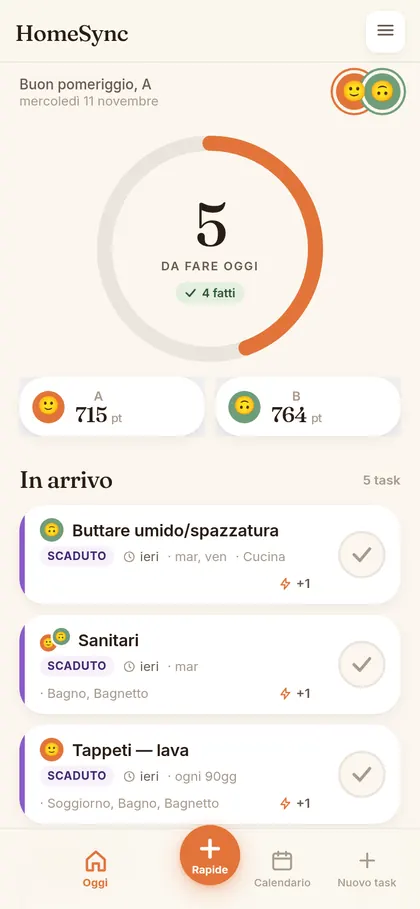
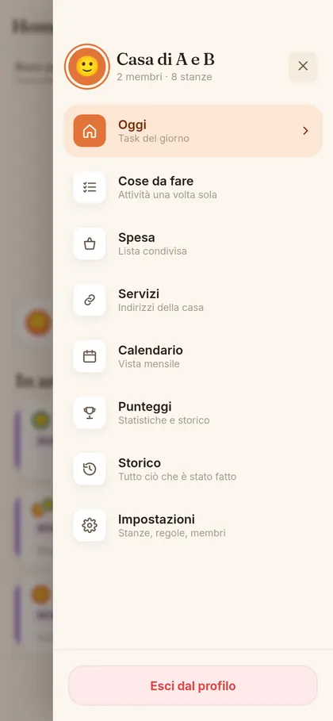
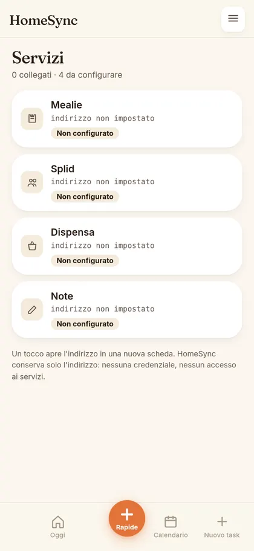

Backend / Applicazione web
HomeSync
Le attività di casa con scadenze, turni e punteggi: un’app che due persone usano ogni giorno, con un backend FastAPI e i dati su un server di casa.



Il problema
In due, le faccende di casa si perdono in tre punti: chi tocca a farla, quando è scaduta, e cosa è stato fatto davvero. Un foglio sul frigo non regge lo storico, e le app che lo fanno vogliono un abbonamento e i tuoi dati su un server che non è tuo.
Il mio contributo
Ho scritto il backend FastAPI e l’interfaccia, e ho tenuto fuori dal progetto tutto ciò che non serve a due persone che vivono insieme. I punti che hanno richiesto più lavoro sono la contabilità degli eventi, dove ogni completamento e ogni rettifica sono eventi e i saldi si ricavano da lì senza ricalcolare mai all’indietro, e il funzionamento senza rete. In concreto:
- backend FastAPI con SQLite in modalità WAL, nessun servizio database separato;
- assegnazione a turno, con penalità per ritardo applicate una volta sola per scadenza;
- storico per evento, con rettifiche motivate che non riscrivono il passato;
- coda offline: le spunte fatte senza rete restano in attesa e partono da sole, senza doppioni;
- interfaccia servita già compilata: 4 richieste e 0,6 MB, contro le 24 e i 3,6 MB di prima.
Prove disponibili
15 file di prove backend, 21 prove browser che aprono l’app davvero su due formati, e una prova che spegne la rete e controlla che la spunta resti in coda e parta al ritorno. Il database di casa ha 433 completamenti registrati su 75 attività e 8 stanze.
Uso e limiti
Non è un prodotto: è un’app di casa. SQLite regge due persone e un server, non un condominio. Il modello linguistico è spento per difetto: le domande in italiano passano da regole deterministiche e il modello resta l’ultima spiaggia. Il repository pubblico è una copia ripulita dai dati, ferma a una versione precedente: mostra il progetto, non il codice in uso. L’app non scrive su nessun servizio esterno: legge indirizzi e apre pagine.
Esempi illustrativi
Esiti illustrativi, non richieste all’app in esecuzione.
Spunta senza rete
In cantina il telefono non prende: la spunta resta in coda con un segno visibile e parte da sola al ritorno della rete, una volta sola.
Rettifica di un completamento
«L’ho fatto io, non tu»: si registra una rettifica con il motivo, i saldi si ricavano dagli eventi e il passato non viene riscritto.
Domanda in linguaggio naturale
«Quando tocca pulire il bagno?»: rispondono le regole, con la data e i giorni mancanti; il modello non viene chiamato.